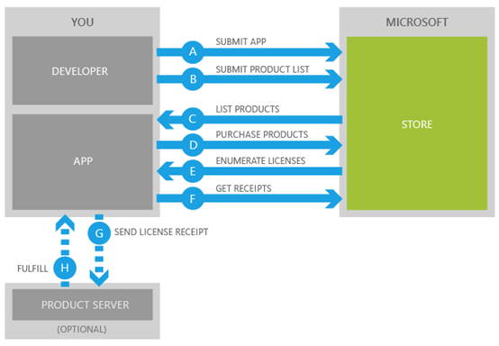
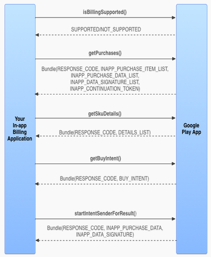
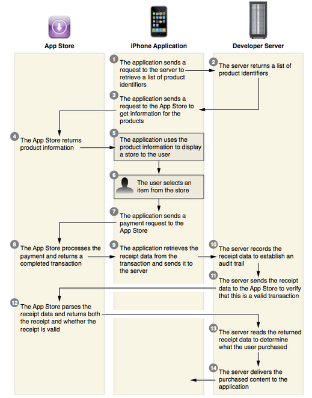

一、概述
应用程序内购买即在应用程序内部给用户提供购买产品的入口，可购买的产品可以是数字内容或服务，这些产品由开发者在自己的服务器上维护。应用程序内购买提供了一种让您利用您的应用获得收益的新方法。很多开发平台都提供了为应用程序添加应用程序内购买功能的接口，如Windows Phone 8、Windows 8、IOS和Android。在Windows Phone 8和Windows 8平台上的应用程序可使用Microsoft 提供的商业基础结构，包括用户可在全世界受支持的国家和区域使用的支付方式，确保程序拥有可靠的付款模式，并且提供一致的手机购物体验、安全地处理个人信息，所有这些将有助于为消费者达到有信心的购物体验。作为应用开发人员，您将使用熟悉的 API，并且拥有应用内产品管理工具和地理位置分散的服务，所有这些让您能够在应用中实现有意义的商务方案。
对于在中国内地销售的Windows Phone 8 手机，已经可以使用人民币进行结算，同时也支持使用支付宝付款，并可以通过支付宝来支持更多付款渠道，极大地方便了用户。比如我们购买商店中的某个游戏，点击购买，我们会发现支付方式已经支持支付宝了，支付过程是单独弹出一个没有地址栏的内嵌浏览器窗口，消费者需要按照手机版支付宝的提示进行操作，付款成功后浏览器窗口关闭，微软也会发来电子邮件作为购买回单
二、产品类型
各平台应用内购买支持的产品类型基本相同，可分为两大类：消耗型和非消耗型。对两种类型产品的详解如下表所示：
|
应用内产品类型 |
说明 |
示例 |
|
消耗型 |
是指一种可以购买、使用（消耗）和再度购买的产品。 |
1,000 单位金币 |
|
非消耗型 |
用户购买后由用户永远所有的产品。它没有被消耗。 |
游戏级别 |
三、应用程序内购买所涉及的各方之间的关系
对于Windows Phone 8和Windows 8应用程序，开发者可以使用熟悉的API与Microsoft进行通信，Microsoft 将提供商业基础结构，包括用户可在全世界受支持的国家和区域使用的支付方式、应用内产品管理工具和地理位置分散的服务，利用这些服务，开发者可以轻松确保应用程序安全、可信，并且使用户具有一致的购买体验。下图展示了Windows Phone 8和Windows 8应用程序完成应用内购买的过程：

对于Android应用程序，通过已安装在设备上的Google Play App与Google Play server进行通信。Android应用程序不直接和Google Play server进行通信，而是通过Google Play App传递请求和回复，下图展示了添加了应用内购买的应用利用Google Play App公布的API与Google Play App进行通信完成应用内购买的过程。

IOS应用程序利用Store Kit在App和App Store之间进行通信，下图展示了当应用内产品维护在服务器上时应用内购买的实现过程，当应用内产品已内置于应用程序内时将不需要步骤2和10-14。

四、从应用商店获取付款
要利用电子资金转账收取通过 Windows Phone 商店 销售的应用程序的付款，您需要提供您的银行信息。您可以通过 开发人员中心 上的个人资料管理您的银行信息。请记住，您必须在其中一个支持付款的国家或地区拥有一个银行帐户。有关所支持的国家或地区的详细信息，请参见地区信息。
在大多数情况下，在您注册 Windows Phone 开发人员中心 时，您需要在线完成请求的税收表格。详细情况请参见获取 Windows Phone 的付款中关于“美国开发人员的税收要求”、“非美国开发人员的税收要求”和“对俄罗斯开发人员的特殊要求”。
对于付费应用所获得的收益，开发者需要与微软进行分成，具体分成比例视国家与地区不同略有差异，同时对于所获得的收益履行纳税义务主体也视国家地区不同而不同，对于绝大多数国家，由开发者履行纳税义务，也有一些国家由微软进行纳税。具体情况，请参见付费应用的详细税收信息。
在一些国家，Windows Phone 商店提供移动运营商结算作为支付方式。如果用户的移动运营商支持商店的此功能，则用户可以使用其移动帐户进行商店购买。详细信息，请参见移动运营商结算。
五、API
对于Windows 8应用程序，Windows.ApplicationModel.Store 命名空间包含可以用来实现应用中的应用内购买体验的类。您可以使用这些类对您的应用及其应用内产品的许可证状态进行检查和启用应用内购买，下表格列出了 Windows.ApplicationModel.Store 中的类：
|
类 |
说明 |
|
定义您可以用来获取有关当前应用的许可和列表信息并执行应用内购买的方法和属性。 |
|
|
列出用户所拥有的产品的所有许可证。 |
|
|
列出用户在其所在国家/地区可以从应用中购买的 商店 产品。 |
|
|
表明用户是否拥有某种具体的应用内产品。 |
|
|
描述信息，包括用户可以在应用中购买的应用内产品的本地化定价、图标、标题和说明。 |
需要特别说明的是，该 API 的 Windows Phone 8 版本在原来基础上为一些类型添加了其他方法和属性，如下表所示：
|
类 |
成员 |
说明 |
|
LoadListingInformationByProductIdsAsync(ListingInformation productIds) |
为匹配任一指定的产品 ID 的应用内产品异步加载产品列表信息。指定一个空 ID 列表返回所有应用内产品的产品列表信息。 |
|
|
LoadListingInformationByKeywordsAsync(ListingInformation keywords) |
为匹配所有指定的关键字的应用内产品异步加载产品列表信息。指定一个空关键字列表返回所有应用内产品的列表信息。 若为每一个关键字单独调用此 API，则可以为匹配一个或多个关键字的所有应用内产品加载列表信息。 |
|
|
void ReportProductFulfillment(string productId) |
通知 商店，应用已经将所购产品交付给用户。在您使用此方法确认产品交付前，用户不能再次购买相同的产品。这仅仅适用于可消耗型产品。 |
|
|
bool IsConsumable { get; } |
获取关于具有此许可证的产品是否为可消耗型产品的信息。 |
|
|
string Description { get; } |
获取应用内产品的说明。 |
|
|
IEnumerable<string> Keywords {get;} |
获取该应用内产品的关键字列表。这些关键字可用于过滤产品列表。 |
|
|
ProductType ProductType {get;} |
获取应用内产品的类型。它可能是ProductType.Consumable或ProductType.Durable。 |
|
|
string Tag {get;} |
获取包含有关此应用内产品的自定义信息的标记字符串。 |
|
|
Uri ImageUri { get; } |
获取与此应用内产品关联的图像的 URI。 |
Android应用程序利用Google Play App暴露的API完成应用内购买功能，API列表如下：
在IOS平台上，Store Kit代表App和App Store之间进行通信。开发者可以使用Store Kit类库提供的如下API：
Class References
1. SKDownload
3. SKPayment
6. SKProduct
10. SKRequest
11. SKStoreProductViewController
Protocol References
12. SKPaymentTransactionObserver
15. SKStoreProductViewControllerDelegate
Other References
17. Revision History
六、为应用添加应用内购买
开发人员必须提供的内容
在各平台为应用程序添加应用内购买功能，您都必须提供以下内容：
● 可以在您的应用中出售的产品
● 清楚准确的产品信息
● 从您的应用内发起购买的能力，即“购买按钮”
● 产品交付和/或支持，又称为实现
实现应用内购买
使用微软提供的API，您可以为您的应用程序启用应用内购买功能，启用步骤如下：
1: 为你的应用初始化许可证信息
当应用在执行初始化时，请通过初始化 CurrentApp 或 CurrentAppSimulator 获取应用的 LicenseInformation 对象，以启用该应用的应用内购买
2: 向应用中添加应用内付费内容
针对你希望通过应用内购买提供的每项功能，创建一个应用内付费内容并将它添加到你的应用中。值得注意的是，向 Windows 应用商店提交你的应用之前，必须将你希望呈现给客户的所有应用内付费内容添加到应用中。如果你稍后需要添加新的应用内付费内容，则必须更新你的应用并向 Windows 应用商店提交新版本
`创建应用内付费内容标记，此标记是一个字符串，在你的应用和 Windows 应用商店中定义和使用它来标识特定的应用内付费内容
●你必须将与应用内付费内容关联的每个功能的代码放在条件块中，从而测试以查看客户是否有使用该功能的许可证
●你的应用还必需为客户提供一种方式来购买应用内付费内容提供的产品或功能。客户无法以购买完整应用的方式通过 Windows 应用商店来购买上述内容
3: 更改测试代码以达到最后要求
在应用的代码中将对 CurrentAppSimulator 的每个引用更改为 CurrentApp
4: 在 Windows 应用商店中配置应用内付费内容
将你的应用提交到应用商店之前，将每个应用内付费内容添加到“提交应用”工作流中的“服务”页面。这是你指定应用内付费内容的标记、价格和功能生存时间的位置
5: 在 Windows 应用商店中描述应用内付费内容
当你将应用包上载到应用商店后，可以在提交你的应用时，在“描述”页上输入每个应用内付费内容的描述。如果你的应用支持多种语言，则必须以你的应用支持的每种语言描述每个应用内付费内容
Android和IOS应用内购买实现的详细步骤参见Android和IOS
七、另请参见
Windows.ApplicationModel.Store
IOS In-App Purchase for Developers